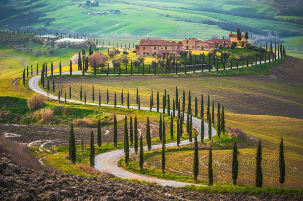
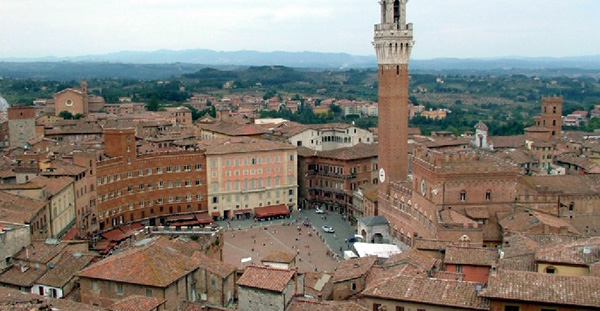
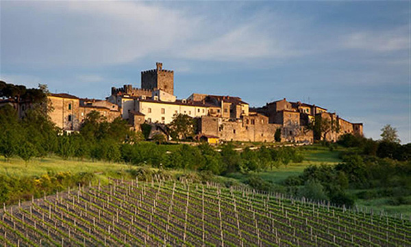

Новый маршрут Велопитера проходит холмам и долинам Аппенинских гор, вдоль многочисленных рек и озер, через старинные деревни, городки и города с величественными крепостями и храмами, с музеями, экспонаты которых вызывают трепет у любителей искусств.
Время и климат благосклонно относятся к этой земле. Здесь сохранились многочисленные памятники – свидетели давно ушедших времен…. Вот те здания – свидетели ожесточенных схваток между представителями аристократических домов гвельфов и гибеллинов, вот это поле помнит фаланги римских воинов, а то – тяжелую поступь карфагенских слонов времен пунических войн… а те камни и вовсе были сложены человеческими руками во времени, сведения о которых дошли до нас в виде мифов и легенд. Наш путь будет проходить по местности отнюдь не простой для велосипедистов – мы будет ехать по пологим, а иногда и не очень холмам, с которых открывается замечательные виды – поля и оливковые рощи, постепенно теряющиеся в дымке за горизонтом, стройные ряды деревьев вдоль дорог, разбросанные там и тут старинные дома. Но на холмы придется взбираться (а потом и спускаться) иногда по серпантинам, иногда по долинам горных рек, по берегам голубых озер, вдоль бесконечных виноградников региона Кьянти. Впрочем, трудности рельефа компенсируются короткими дневными пробегами.
Мы встречаемся в римском аэропорту и с римского вокзала Termini добираемся по городка Terni, расположенного на юге Умбрии на равнине реки Нера, в 100 км от Рима. Именно здесь начнется велосипедная часть маршрута. Терни был основан примерно в 7 веке до н.э. племенами умбров В 3 веке до н.э. город был захвачен римлянами и стал важным населенным пунктом, поскольку лежал на одной из главных дорого Апеннинского полуострова – Виа Фламиния (из Рима в современный Римини на Адриатике). Именно тогда, в эпоху Древнего Рима, здесь были построены акведуки, крепостные стены, амфитеатры, храмы и мосты, значительно украсившие город и способствовавшие его расцвету. Среди главных достопримечательностей Терни можно назвать античные руины – римский амфитеатр, построенный в 32 году до н.э. и когда-то вмещавший в себя до 10 тысяч человек, и небольшие римские ворота Порта Сант Анджело, бывшие одними из четырех городских ворот в древние времена. Одним из немногих сохранившихся средневековых строений является Палаццо Маццанколли. В другом дворце - Палаццо Гаццоли – возведенном в 18 веке, сегодня размещается Городская картинная галерея. А муниципалитет Терни занимает здание Палаццо Спада, построенное в 16 веке архитектором Антонио да Сангалло-младшим. Из религиозных строений заслуживает внимания в первую очередь барочный Кафедральный собор Санта Мария Ассунта, построенный в 17 веке на месте одного из самых древних христианских зданий Терни. Его фасад имеет две средневековые двери, на одной из которых можно увидеть очертания деревянного башмака. Другие интересные церкви – Сан Франческо, Сант’Ало, Сан Мартино, Сан Сальваторе и базилика Сан Валентино. Да-да, того самого святого Валентина – покровителя всех влюбленных. Именно здесь он родился и стал епископом, поэтому город считается столицей влюбленных и соперничает со знаменитой Вероной, которая приобрела свою славы лишь благодаря перу Шекспира.
В окрестностях Терни при впадении реки Велино в реку Нера находится искусственно созданный водопад Каската делле Марморе высотой в 165 метров – один из самых высоких в мире.
Хотя до Сполето по шоссе всего 30 км, мы поедем тихими дорогами, в объезд напряженного шоссе. Правда за это придется платить горами– сначала дорога полого поднимается по долине реки, а затем карабкается по горам. Средневековый город Spoleto живописно раскинут на склоне холма, над которым возносится массивная твердыня (Rocca), на месте цитадели сполетских герцогов. Сполетский собор (12 в) помимо восьми готических окон в форме розеток и большой мозаики 13 в., известен величественной фреской «Венчание Девы Марии» кисти фра Филиппо Липпи, который покоится в этом храме.
Из более древних памятников сохранился важный акведук, 206 м длины и 81 м высоты, проложенный по средневековому мосту через реку (XIV в); «Кровавый мост» I в. до н. э.; развалины доримских и римских укреплений, античного театра (частью воссозданного усилиями реставраторов) и античная арка Друза.
Город Асизи расположен на южном склоне горы Монте Субазио над рекой Киашо.
Всемирную известность город получил как родина одного из самых почитаемых католических святых – Франциска Ассизского, который построил здесь первый монастырь своего ордена, который теперь мы знаем, как францисканский. Сегодня этот монастырь, получивший название Сакро Конвенто, и стоящая рядом с ним готическая церковь Сан Франческо, в которой покоятся останки святого, внесены в список объектов Всемирного Культурного Наследия ЮНЕСКО.
В XI веке Ассизи был процветающей и независимой гибеллинской коммуной, которая, правда, находилась в состоянии перманентной войны с Перуджей, в которой правили гвельфы. Во время одной из битв между гвельфами и гибеллинами в местечке Понте Сан Джованни был захвачен в плен молодой Франческо ди Бернардоне – заточение полностью изменило его образ жизни и мыслей и превратило его в того, кого весь мир знает под именем святого Франциска Ассизского.
С вершины холма, где расположен Замок Рокка Маджоре – величественная крепость - открывается великолепный вид на город.
От Нижней площади Сан Франческо можно спуститься вниз по улице Виа Сан Франческо и оказаться у городского музея, в котором собрана отличная коллекция произведений искусства эпохи Возрождения. А на площади Пьяцца дель Коммуне можно увидеть превосходно сохранившийся портик античного храма Минервы, средневековый Палаццо дей Приори и Новую церковь.
Перуджа — город очень древний, первое упоминание о нем встречается в документах IV века до н. э. Ну, а сейчас столица провинции Умбрия — университетский город со множеством студентов, приехавших сюда из разных уголков земного шара. Главная улица, жизнь на которой не затихает ни на минуту, — бульвар Вануччи. Всегда кипит деятельность и на центральной площади 4 Ноября. Высящийся на ней фонтан Маджоре считается самым красивым средневековым фонтаном Италии. Здесь же находится Палаццо-деи-Приори (XIII век) — под его сводами соседствуют Колегьо-дель-Камбьо (резиденция Гильдии банкиров, построенная в XV веке и расписанная Перуджино) и Колегьо-делла-Мерканция (резиденция Торговой гильдии). Напротив дворца возвышается монументальный кафедральный собор Сан-Лоренцо, строительство которого завершилось в конце XV века.Впрочем, и со времен этрусков кое-что сохранилось: фрагменты, стен с воротами (также известные как Порта-Аугуста), камерная гробница и этрусский колодец — грандиозное сооружение, служившее водохранилищем (расположен на Пьяцца-Данти).
Озеро Тразимено - одно из самых больших в Италии - с тремя островами - расположено среди многочисленных виноградных и оливковых рощ. По его берегу проложена 50 км велодорожка.
Между городками Монте дель Лаго и Сан Феличано возвышается замок – Кастелло Дзокко. Это одно из самых больших строений в окрестностях Тразимено и единственный замок, на территории которого сохранилась средневековая башня.
На северном берегу озера произошла одна из решающих битв италийской компании великого Ганнибала. Победив в ней, мог бы пойти на Рим, но не стал этого делать, посчитав осаду Великого Города слишком опасной.
Сегодня мы будем покидать Умбрию, пересекая отроги Апеннинских гор. Первым городом, который мы встретим в Тоскане – это Монтепульчано со многочисленными знаменитыми палаццо (например трёхоконный палаццо Таруджи), дворцом Синьории — копией флорентийского палаццо Веккьо. Однако подлинная гордость горожан — церковь Мадонна ди Сан-Бьяджо (16 в), названная «одной из чистейших гармоний» Высокого Возрождения.
Пиенца является наглядными примером попытки превращения средневекового поселения Корсиньяно в идеальный ренессансный город с прямыми улицами и регулярной планировкой. Изначально проект реконструкции затрагивал лишь центральную площадь города, на которую выходят Кафедральный собор, папская резиденция дворец Пикколомини, Дворец епископа и Преторский дворец. Площадь имеет трапециевидную форму, причем на широкой стороне трапеции находится собор. Брусчатка из красного кирпича поделена на квадраты полосами светлого травертина, которые создают перспективную сетку, соразмерную пропорциям окружающих зданий. Впоследствии реконструкции подверглись также наиболее важные здания, находящиеся на главной улице города. Смерть папы Пия II и Бернардо Росселлино – заказчика и архитектора – помешала полностью воплотить в жизнь этот проект.
Вот короткий список достопримечательностей Пиенцы:
Кафедральный собор (Duomo di Pienza), посвященный Вознесению Богоматери, вписан в главную площадь города, напоминающую театральные декорации. Дворец коммуны (Palazzo Comunale), некогда бывший резиденцией приоров, находится на площади Пия II, напротив Кафедрального собора. Дворец Пикколомини (Palazzo Piccolomini), являющийся одним из самых ранних образцов ренессансной архитектуры, находится на площади Пия II, справа от Кафедрального собора. Епископский дворец (Palazzo Vescovile) находится на площади Пия II, к востоку от Кафедрального собора и напротив дворца Пикколомини, Пустынь (это грот) Romitorio. Церковь святого Франциска примыкает к западу к дворцу Пикколомини. Это одна из самых ранних францисканских храмовых построек в Италии.
День 7. Пиенца – Сиена (Siena) 60км
Сиена – этот старинный красно-коричневый город, расположенный на трёх холмах - Терциях и окружённый высокими кирпичными стенами XVI века, является одним из самых посещаемых городов Италии.
В самом центре Сиены находится полукруглая площадь Пьяцца-дель-Кампо с большим красивым дворцом Палаццо Публико, Ратушей, фонтаном Радости и «визитной карточной» Сиены - башней Торре дель Манджа. Из-за неровностей рельефа площадь построена в виде вогнутой раковины.
День 8. Сиена – Кастеллино ин Кьянти - Сан Джиминьяно (San Gimignano) 65км
Вот наконец мы добрались до Кьянти – знаменитого винодельческого района Италии, соперничившего с французским Медоком.
Маленькие советы любителям Кьянти
Вина «Кьянти» законодательно в середине 19 в должны производиться из 70 % винограда сорта санджовезе, 15 % канайоло и 15 % белого мальвазия, однако часто в состав его входит только первый сорт.
Вы, придя в магазин, можете по цене понять, что вино Кьянти Классико будет более качественным, чем просто кьянти. Визуально их можно различит по наличию на акцизной марке Черного Петуха. Этим символом в 20х годах стала обозначать собственные вина небольшая группа виноделов из Кьянти Классико (ChiantiClassico), решивших выделится на фоне остальных высоким качеством вина. Позже именно они добились присвоения зоне производства Кьянти самого высокого в винном мире Италии статуса DOCG (это аналог французского АОС). Помимо Кьянти Классико стоит отметить также Кьянти Руфина. У нас на рынке этот район в основном представлен производителем Frescobaldi. Но вы можете встретить и менее знаменитые марки кьянти Кьянти Колли Фиорентини (Colli Fiorentini), Кьянти Колли Сенези (Colli Senesi), Колли Аретини (Colli Aretini) и Коллине Пизане (Colline Pisane) и новую марку - Колли Монтеспертоли. Также очень многие производители, производя вино в зоне кьянти выпускают его под маркой Toscana IGT. Например, такие вина, как Le Pergole Torte и La Dgioia вполне могут называться Кьянти Классико.
Кастеллино ди Кьянти, которую мы проедем - небольшая коммуна на восток от Сиены – один их трех исторических центров производства знаменитого вина.’
Основной архитектурной «изюминкой» Сан-Джиминьяно, безусловно, являются четырнадцать средневековых башен XI—XIII века, построенных наиболее знатными семействами, желавшими подчеркнуть своё общественное положение. Всего было выстроено, по разным данным, от 70 до 76 башен, но до наших дней дожили немногие, в том числе дом Куньянези, дом Песчиолини, палаццо Франчези-Чеккарелли с несимметричным фасадом. Некоторые «небоскрёбы» достигают высоты 50 метров.
Сегодня мы двигаемся по холмистой дороге "Via Francigena"- дороге франков - средневековому пути пилигримов, направляющихся из северной Европы в Рим. Это была вторая по значимости дорога паломников после Camino de Santiago ( путь св. Иакова). После Certaldo мы оставляем дорогу франков и переходим на Via Volerrana (она ведет в мистический город этрусков Вольтерру), но мы, по долине реки Эльса , поедем к городку Кастельфлорентино (Castelflorentino) с замком на холме и остатками крепостных стен, немыми свидетелями феодальных распрей между Флоренцией и Сиеной. Двигаясь через виноградники и оливковые рощи, за 20 км до Флоренции мы встретимся с городком Montespertoli – одним из новых центров виноделия региона Кьянти.
И вот, наконец Флоренция – конечный пункт нашего путешествия.
Завтра мы улетаем домой, но тем, кто не был во Флоренции мы настоятельно рекомендуем задержаться там хотя бы на день.
Солнечная Флоренция, столица Тосканы, знаменита тем, что именно отсюда Европа шагнула в эпоху Возрождения. Не зря говорят, что здесь нельзя шагу ступить, не попав в какой-нибудь музей: число достопримечательностей в этом европейском городе невероятно велико, и это совершенно кружит голову. Первое, что, наверняка, связалось в памяти с упоминанием этого города — Понте Веккьо, мост через реку Арно. Поднимемся на расположенную на возвышении просторную Площадь Микеланджело Внизу, прямо перед вашими глазами, раскинется Флоренция во всей своей красе, своем величии, своей неповторимости. Одна из красивейших в Италии Площадь Синьории — еще одно знаменитое место Флоренции, место поразительной гармонии и скопления произведений искусства. Именно здесь находится Дворец Веккьо и «Фонтан Нептуна» с мраморным богом воды. Примыкают к резиденции Медичи известные во всем мире Сады Боболи — парк потрясающей красоты с террасами, изящными фонтанами и романтичными беседками, вдоль дорожек которого стоят скульптуры, напоминающие о временах от античности до XVII столетия. Купол собора Санта-Мария-дель-Фьоре (иначе его называют Дуомо) можно увидеть почти из любой точки города: шагаешь по улице и вдруг из просвета между домами вырастает этот величественный и потрясающий свод одной из самых больших в мире базилик. Галерея Уффици по праву считается одним из самых великолепных музеев не только в Италии, но и во всем мире. В галерее выставляются непревзойденные работы таких мировых мастеров как Джотто, Леонардо да Винчи, Мазаччо, Микеланджело, Боттичелли, Пьеро дела Франческа, Рафаэль, Караваджо, Рубенс, Дюрер, Гойя, Рембрандт и многие другие. Во дворце Палаццо Питти находится целый комплекс музеев. В их числе — Галерея Палантина, где хранятся бесценные произведения работы Тициана, Рафаэля, Тинторетто, Караваджо, Боттичелли, Веласкеса, Ван Дейка и Рубенса; сокровищница Медичи, Галерея Современного Искусства, музеи серебра, костюма, фарфора и карет. По посещаемости превосходит все музеи Галерея Академии изящных искусств (Galleria dell’Accademia): здесь находится «Давид» Микеланджело, а также множество полотен и скульптур мастеров с мировым именем.
Напоследок - маленькое упражнение в итальянском:
NB A causa della carattere complessa dell'itinerario lasciamo la possibilità di piccoli cambiamenti.
Означает, что мы можем впоследствии немного изменить план – как-никак это первый пробег по этому маршруту. Обещаем оставить на месте крепости, соборы и картины великих мастеров.
NB. Данное описание - это план путешествия. Организаторы сохраняют за собой право на его изменение в зависимости от конкретной ситуации.
Цену вопроса смотрите на странице Календарь
{/block}